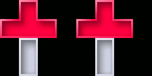

Most of these techniques require skilled use Quantro's controls, and may not
be possible for players using hardware buttons, single-touch touchscreens, or
certain control configurations.
Quick-Slides
A quick-slide will immediately move the current piece as far to the left
(or right) as possible. In the gesture control
style, swiping horizontally will cause a single quick-slide. For
gamepad controls, press and hold a
move button to start a quick-slide.
As long as the button is
held, the piece will continue to slide in that direction, such as when a turn,
drop or fall moves it away from an obstacle.
Quick-slides are especially helpful on higher levels when fast piece movement is a requirement.
Quick-slides in both directions.
180-Turns
Pieces normally rotate by 90 degrees when turned.
Using both the clockwise and counter-clockwise turn buttons together produces
a 180-degree turn.
First press and hold one of the buttons (say, clockwise), then tap the second (CCW).
The piece will first rotate 90 degrees clockwise — if possible — then 180 degrees counter-clockwise. As
long as the first button is held, the second will produce a 180-degree rotation each time
it is tapped. 180-turns are always available in the gamepad
control style, and can be used in the gesture control
style if on-screen turn buttons have been activated in the Settings
menu.
180-turns are useful when normal turns are impossible, or to fit a piece where
normal turns can't.
A 180-turn fits this piece where normal turns can't.
Kicks
When a falling piece is positioned next to a wall or other blocks and turned,
it will sometimes need to move to a new position to avoid the obstacle. This move is
called a kick. Kicks can be used to maneuver around blocks and get pieces into
tricky positions.
A kick helps get this piece into position.
Leans
When a piece kicks away from an obstacle it will tend to move in the direction
it was turned — right for clockwise, left for counter-clockwise.
You can override this preference by moving the piece in the preferred piece direction just
before a turn. This is called a lean. In the gamepad
control style, lean by pressing and holding one or more of the move and drop buttons
before tapping the turn button. For gesture
controls, use one finger to drag the piece in the preferred lean direction and then tap the screen
with a second finger before releasing the first.
As an example, if you turn a piece clockwise while "leaning down and left" (holding
the drop button and move left
button, or dragging down and left with another finger), the piece will prefer to kick downwards and to the left,
rather than to the right.
Note: control configurations that lock the piece automatically when dropped will prevent
downward leans.

Depending on the lean direction, this piece could
kick in several different ways.
"Quantro," "Peace Ray," and the "Q" logo are trademarks of Peace Ray LLC.